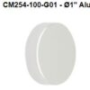
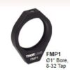
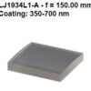
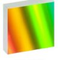
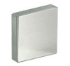

At present, finding their web pages in the US can be challenging, and most of them are in French. Using google Chrome or Chromium allows for translation which works very well. The links to all of the pages are in the tables below.
In order to download the STL files, you have to click on them one at a time, very teadous considering how many there are. Downloading this git repository gives you this documenation and all of the STL files in one shot. I have also created Prusa 3mf files that have the necessary settings taken care of, including supports where needed.
Note: This data is all from the UVEX web site, this is just my orgnization of the data. The credit goes to them.
UVEX-4 | ||||
|---|---|---|---|---|
| Qty | Ref | Part # | Price | Picture |
| 2 | M1, M2 | CM254-100-G01 | $64.94 each |  |
| 2 | M1, M2 | FMP1/M | $18.41 each |  |
| 1 | cylindrical lens | LJ1934L1-A | $103.66 |  |
| 1 | Diffraction Grating (600) | GR25-0605 | $125.77 |  |
UVEX parts kits from France |
||||
GuideX | ||||
| 1 | Mirror | ME05S-G01 | $24.05 |  |